Project 3: Fun with Flow Models
CS180: Introduction to Computer Vision and Computational Photography
Part A explores a pretrained PixNerd flow model for denoising, generation, editing, classifier-free guidance, visual anagrams, and hybrid images. Part B trains UNets from scratch on MNIST and extends them to time-conditioned and class-conditioned flow matching.
Part A: Exploring the Power of Flow Models
In Part A, I explored a pretrained flow-matching model, PixNerd-XXL-P16-T2I, without training the model myself. The goal was to understand how flow models move between Gaussian noise and clean images, first through denoising and sampling, then through classifier-free guidance and several creative image-editing applications.
For Sections 1.1–1.5, I used my own Iceland mountain photograph, center-cropped and resized to \(512\times512\), with seed 180 for reproducibility.
1. Visualizing Training and Sampling
1.1 Constructing Noisy Training Inputs
The first step was to implement the forward interpolation process. Given a clean image \(x_1\) and a single Gaussian noise tensor \(\epsilon\), I computed \(x_t=(1-t)\epsilon+t x_1\) for \(t=0.25, 0.50, 0.75\), reusing the same sampled noise tensor at all three times so that only \(t\) changed.
This is not simply additive noise: as \(t\) decreases, the clean-image contribution is also scaled down while the Gaussian-noise contribution increases. Thus \(t=0\) corresponds to pure noise and \(t=1\) corresponds to the clean image.
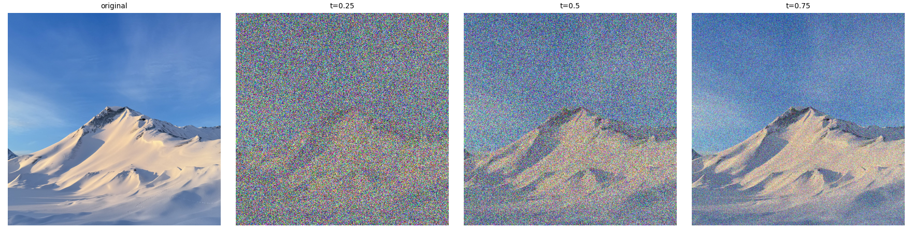
The effect of \(t\) is clear: at \(t=0.25\), the Gaussian noise dominates and only a faint outline of the mountain remains; at \(t=0.50\), the main mountain structure is visible but still strongly corrupted; at \(t=0.75\), the clean-image component dominates and the mountain contours and color structure are already apparent.
1.2 Classical Denoising with Gaussian Blur
Before using the flow model, I tested a Gaussian-blur baseline. Since the clean-image component of \(x_t\) is scaled by \(t\), I divided the noisy image by \(t\) to restore its amplitude before applying blur. I selected the blur strength that minimized reconstruction MSE for each noise level: \(\sigma=16\) at \(t=0.25\), \(\sigma=4\) at \(t=0.50\), and \(\sigma=2\) at \(t=0.75\).
At \(t=0.25\): the input is dominated by noise, so a very strong blur is needed. This suppresses much of the noise but removes most of the fine mountain structure, producing a heavily smoothed reconstruction.
At \(t=0.50\): a moderate blur removes much of the noise and makes the mountain recognizable, but the snow texture and ridge boundaries are noticeably softened.
At \(t=0.75\): only mild smoothing is required because the clean-image component is already strong, so substantially more structure and detail are preserved.
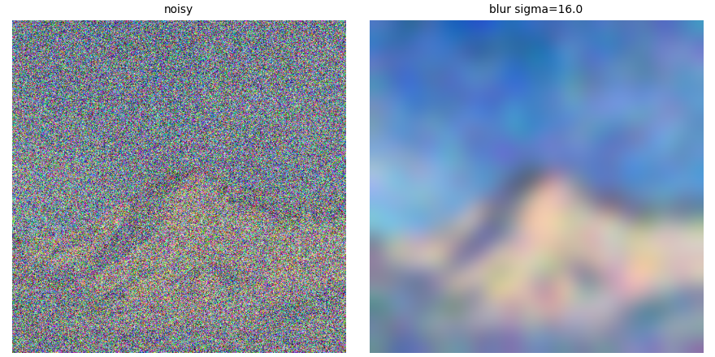
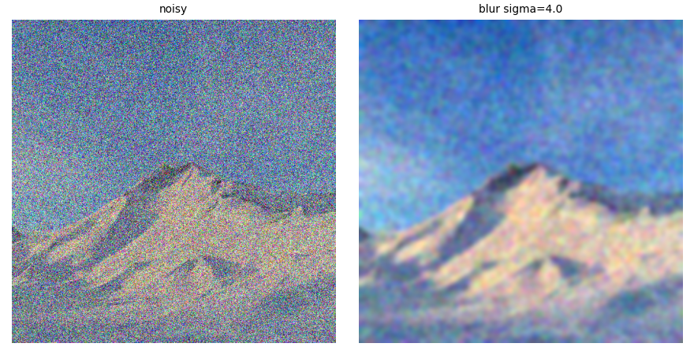
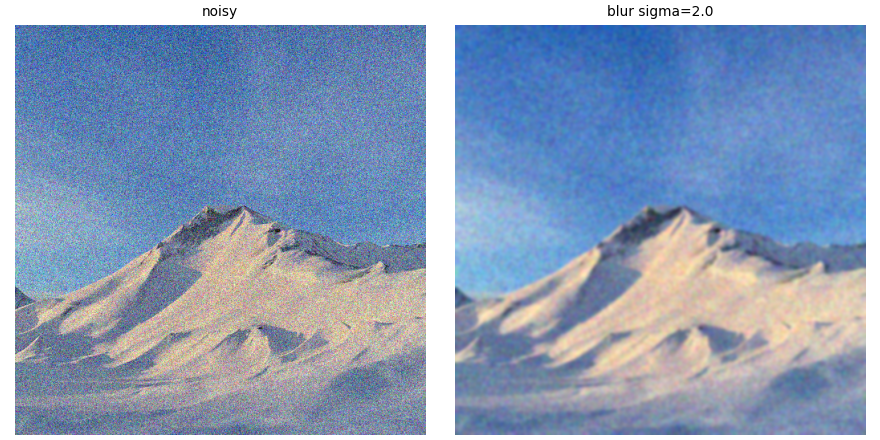
This shows the tradeoff of classical filtering: stronger blur suppresses noise but also destroys useful high-frequency information. Compared to the learned flow model, Gaussian denoising cannot reconstruct semantically meaningful structure as effectively.
1.3 One-Step Denoising
Using the prompt "a high quality photo", I evaluated the model once at \(x_t\) and extrapolated from the current time to the clean endpoint:
Even at \(t=0.25\), where the input is heavily corrupted, the model reconstructs a plausible mountain rather than simply smoothing the noise. At \(t=0.50\), the snow fields and mountain geometry are recovered much more accurately; at \(t=0.75\), the output is already close to the original.
Unlike Gaussian filtering, the pretrained flow model can reconstruct plausible semantic structure rather than only averaging nearby pixels. This is especially visible in the mountain ridge and snow fields.
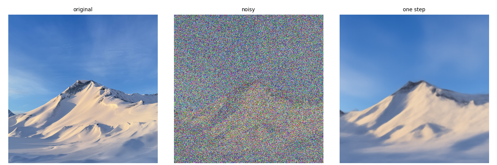
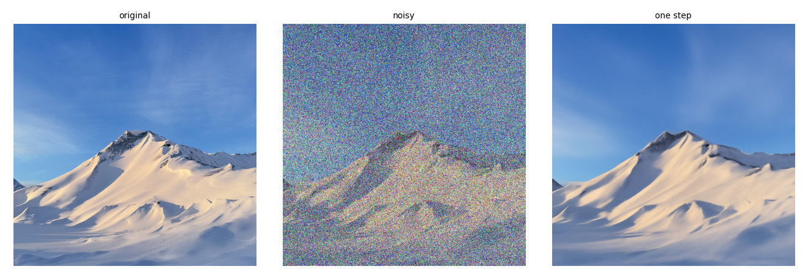
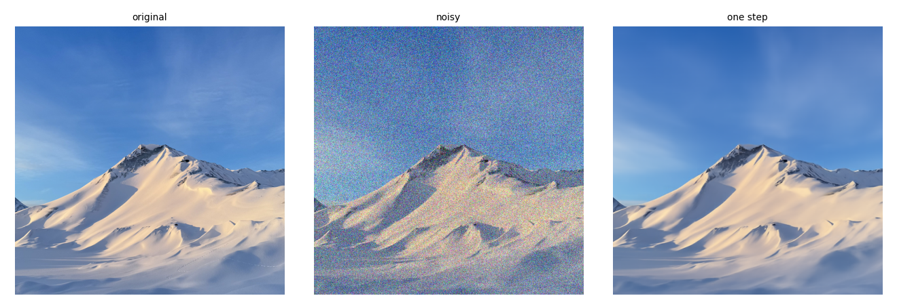
1.4 Visualizing the Predicted Velocity
To understand what the model is predicting, I visualized the update added at each noisy input. The model predicts a velocity field \(\hat{v}_t = v_\theta(x_t,t,c)\), so the update used for the one-step estimate is \((1-t)\hat{v}_t\). I also computed the ground-truth correction \((1-t)v_{\text{gt}} = x_1 - x_t\), where \(v_{\text{gt}} = x_1 - \epsilon\), and compared the predicted and true updates with an RMS error map.
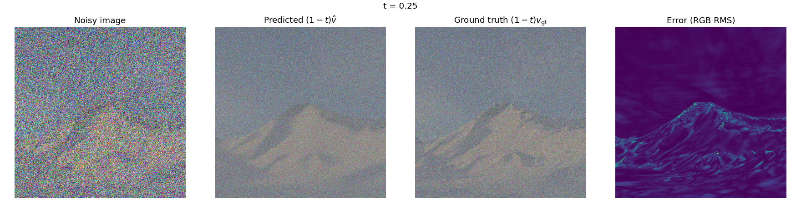
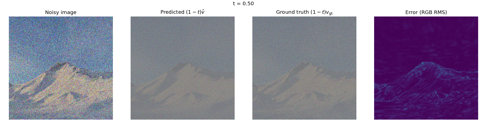
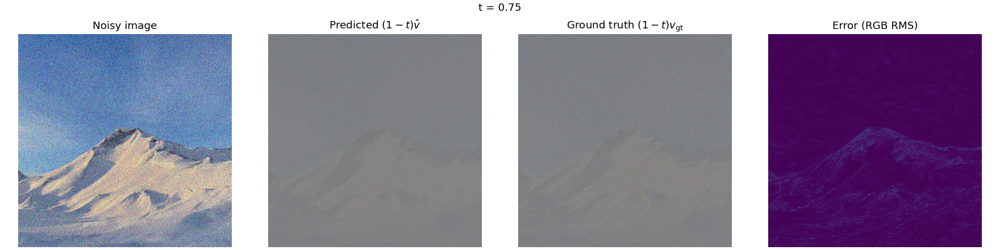
The predicted updates match the broad spatial structure of the true update, with the largest errors concentrated around ridges, edges, and textured snow regions. As \(t\) approaches 1, the required correction shrinks because the image is already close to the clean endpoint.
1.5 Iterative Denoising with Euler Sampling
A single velocity prediction assumes the velocity remains constant. In practice, the velocity field changes as the image changes, so I used Euler integration:
I used \(h=0.02\), starting from the saved \(t=0.50\) noisy image. This produces 25 updates before reaching \(t=1\). The saved trajectory shows the states at \(t=0.50\), \(0.60\), \(0.70\), \(0.80\), \(0.90\), and \(1.00\). Unlike one-step denoising, the Euler sampler recomputes the model's velocity after every update, allowing the predicted direction to change as the image evolves.
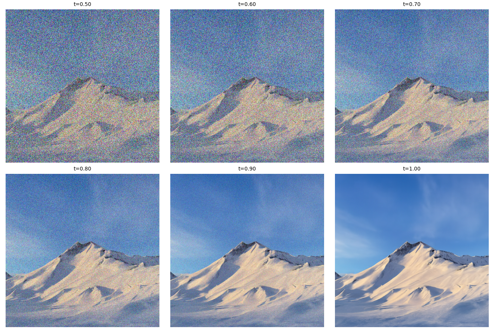
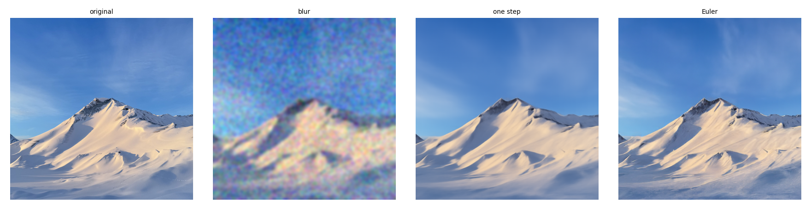
For this image, the one-step estimate gives the lowest pixelwise MSE, but the Euler result retains more high-frequency mountain texture and sharper ridge structure. Visually, that can make the Euler output appear more natural even when the scalar MSE is slightly higher. Gaussian blur performs substantially worse because it cannot reconstruct the lost semantic structure.
1.6 Generating Images from Pure Noise
I also used Euler sampling from pure Gaussian noise at \(t=0\) to generate images directly. I created five samples using seeds 180–184 and the generic prompt "a high quality photo".

A clear bias appeared: all five samples generated people or portraits. The generic text prompt favored portrait photography, even though the prompt itself was broad. The unguided outputs were not always equally coherent, but the underlying portrait bias was consistent.
2. Conditional Generation and Guidance
2.1 Classifier-Free Guidance
To strengthen the text condition, I implemented classifier-free guidance (CFG). For each step, I evaluated the model once with the conditional text prompt and once with the empty string, then combined the two predictions:
I also verified that setting the CFG weight to \(w=0\) reproduces the ordinary conditional prediction.
Using the same initial noises as the unguided samples allowed a direct comparison. The CFG outputs were cleaner, more coherent, and more photographic, with faces better structured and the overall images more convincingly aligned with the prompt. However, stronger guidance also reduced diversity: the CFG results were more stylistically similar to each other.
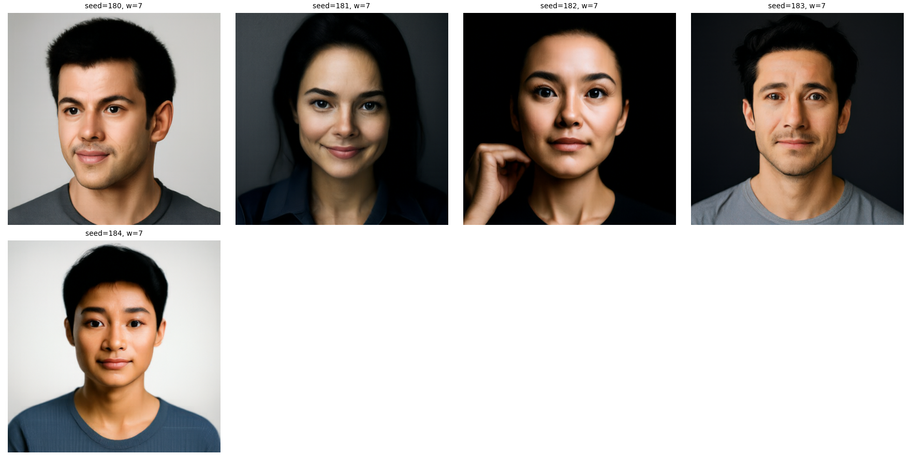
The underlying portrait bias of "a high quality photo" remained even under CFG; guidance strengthened this preferred interpretation rather than replacing it. This is a useful reminder that tuning the conditioning strength improves alignment but does not necessarily eliminate the model's underlying subject bias.
3. Creative Applications
For the creative applications, I reused the Euler sampler with \(h=0.02\) and \(w=7\), using the empty string as the unconditional CFG prompt. The key idea was to modify the starting time, the text prompt, or the velocity field itself to steer the edit in different directions.
3.1 Image-to-Image Editing
Image-to-image editing begins by mixing an existing image with Gaussian noise at some starting time \(t_{\text{start}}\) and then running the guided flow sampler from that point to \(t=1\). I evaluated the same seven starting times throughout the editing sections:
A smaller starting time leaves very little of the source image intact and gives the model more freedom to invent new content. A larger starting time preserves more of the original image and therefore creates a smaller edit. This creates a continuum between free generation and preservation of the source image.
Campanile
Using a generic prompt of "a high quality photo", the lowest starting times reinterpret the Campanile as a much simpler tower or monument. At very low starting times, mostly the concept of a tall vertical object survives and the model invents a new tower or monument. At intermediate times, the geometry increasingly follows the original Campanile proportions. At higher starting times, recognizable architectural details return and the result closely matches the source photograph.

Iceland Mountain
The same trend appears with my Iceland photograph: lower starting times produce new snowy landscapes or abstract forms, while larger starting times steadily restore the original silhouette, snow fields, and sky. At very low starting times, the source mountain is largely replaced by unrelated or strongly reinterpreted snowy landscapes. At intermediate starting times, the broad mountain silhouette begins to return. At larger starting times, the original snow fields, ridge geometry, and sky are increasingly preserved.
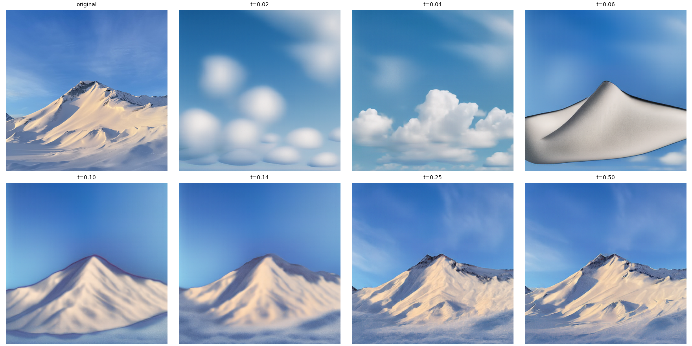
Tokyo Tower
Low starting times can change both the object and the general scene, while larger starting times restore the recognizable red tower. At low starting times, both the tower and surrounding scene may change significantly. At intermediate values, the model preserves the vertical tower composition while changing its appearance. At higher starting times, the recognizable red Tokyo Tower structure is restored. These examples show the balance between generation and reconstruction.
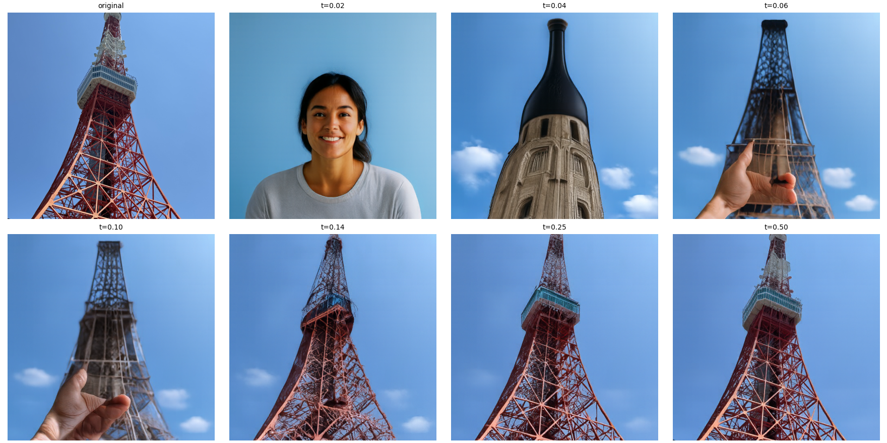
Marina Bay Sands
At low starting times, the architecture is heavily reinterpreted and can turn into unrelated content. As the starting time increases, architectural forms begin returning, and at larger values the distinctive three-tower composition becomes recognizable again.
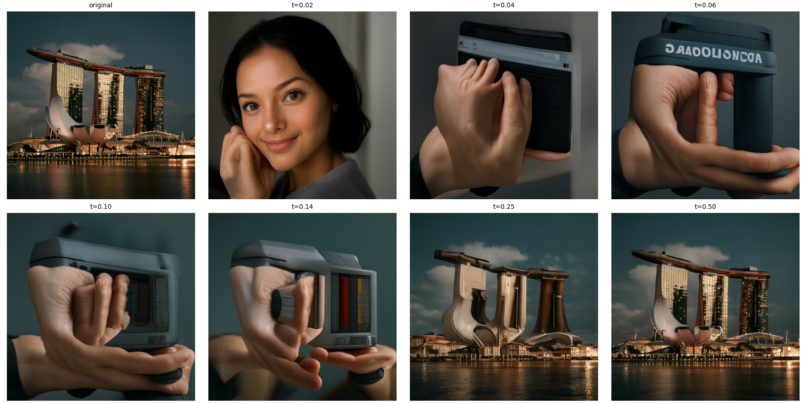
Bird Drawing
The sparse line drawing gives the model little realistic texture to preserve. At low starting times, the sampler may produce unrelated natural-image content. At intermediate values, bird-like structures begin to emerge, while high starting times preserve the cartoon's original layout much more closely.
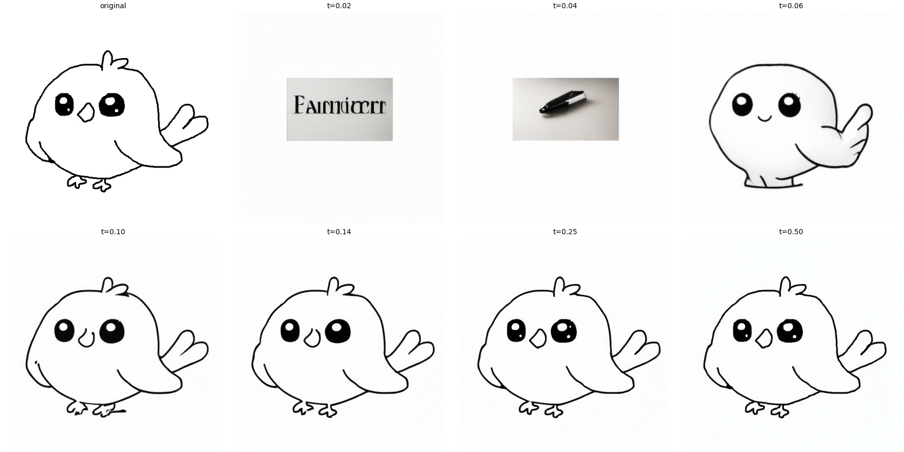
Line Drawing
At low starting times, the sparse geometric objects are interpreted creatively as natural-image structures. As the starting time increases, the original arrangement and simple line-drawn forms progressively return.
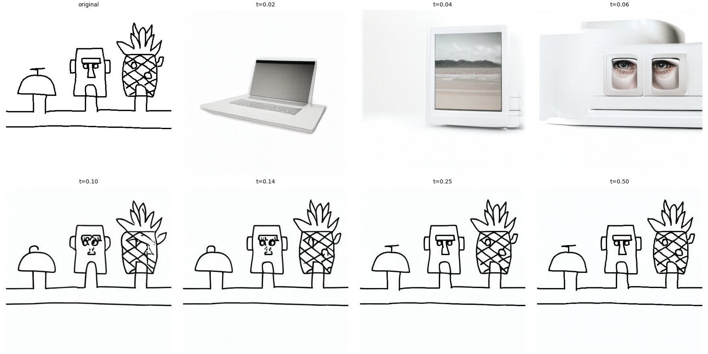
3.2 Text-Guided Image Editing
I next changed the text prompt while keeping the same editing procedure. The prompt controlled the semantic direction of the edit, while \(t_{\text{start}}\) controlled how far the model could move away from the original image.
Campanile → Rocket
"a photograph of a rocket on a launch pad"
At low and intermediate starting times, the prompt strongly transforms the Campanile into a rocket or launch structure. The intermediate results are particularly interesting because they retain the Campanile's tall framing and proportions while replacing architectural details with rocket-like geometry. At larger starting times, the original Campanile increasingly dominates, and by \(t=0.50\) the tower is mostly preserved.
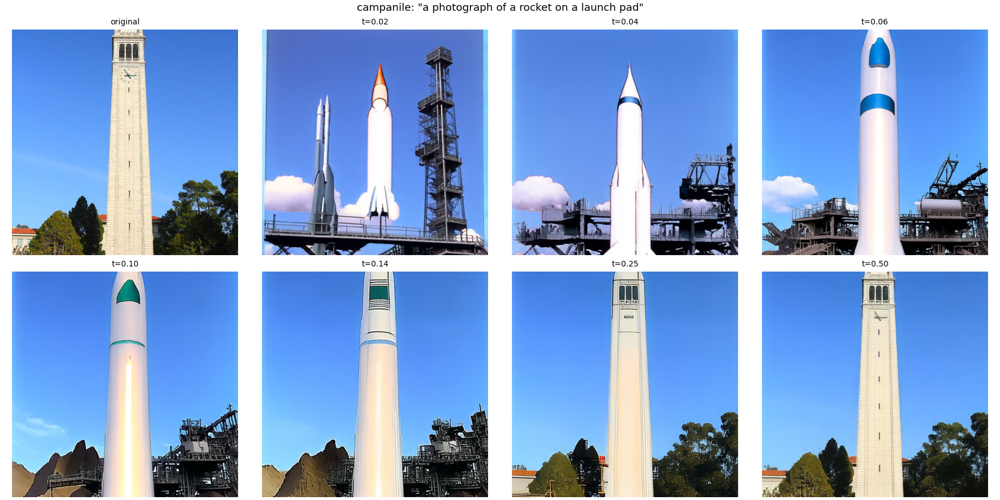
Iceland Mountain → Erupting Volcano
"a photograph of an erupting volcano under a dramatic sky"
At low and intermediate starting times, the snowy mountain becomes a volcanic cone with lava, smoke, or an eruption plume while still retaining the broad mountain composition. At larger starting times, the original snowy landscape increasingly returns and the volcanic transformation weakens. This illustrates the tradeoff between prompt strength and source-image preservation.
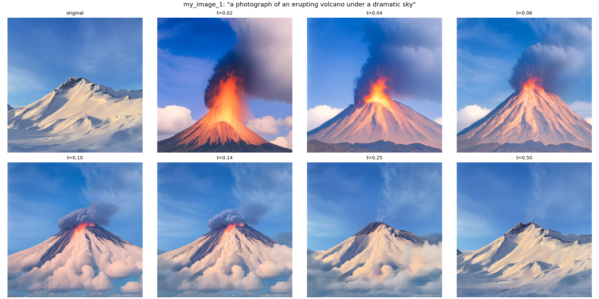
Tokyo Tower → Eiffel Tower at Night
"a photograph of the Eiffel Tower at night with sparkling lights"
At low and intermediate starting times, the model changes the tower toward an Eiffel-Tower-like lattice structure and introduces an illuminated night setting. At larger starting times, the original red Tokyo Tower and daytime scene increasingly return.
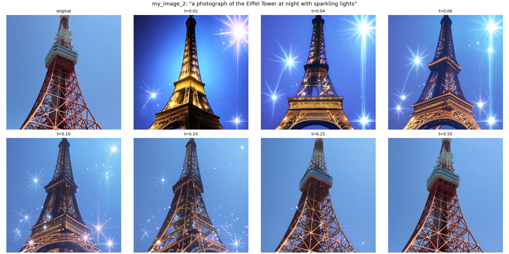
Overall, the text prompt controls the semantic direction of the transformation, while \(t_{\text{start}}\) controls how far the model is allowed to move away from the original image.
3.3 Visual Anagrams
Visual anagrams use two text conditions to create a single image whose interpretation changes under rotation. For the upright orientation, I computed a CFG velocity using prompt \(c_a\), rotated the current image by \(180^\circ\), computed another CFG velocity using prompt \(c_b\), rotated that velocity back, and averaged the two:
I first verified the implementation using the provided example prompt pairs. I then created two additional visual anagrams using prompt pairs of my own choice. The averaged velocity is used at every Euler step, encouraging the same image to satisfy two different text conditions depending on its orientation.
Starter / Reference Examples
Anagram 1: Old Man / Campfire
Upright: "an oil painting of an old man"
Rotated: "an oil painting of people around a campfire"
In the upright orientation, the result strongly resembles the face of an elderly man. After rotation by 180 degrees, the same warm highlights and dark masses reorganize into several figures surrounding a bright campfire. Some face-like structure remains visible after rotation, but both intended interpretations are recognizable.
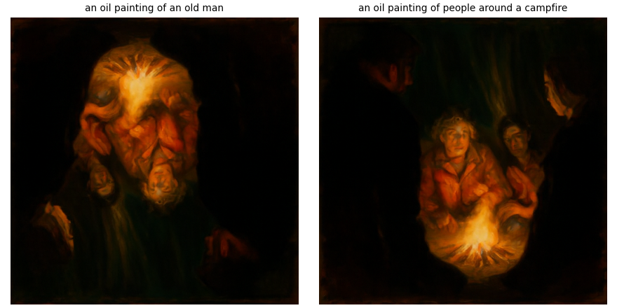
Anagram 2: Snowy Village / Horse
Upright: "a lithograph of a snowy mountain village"
Rotated: "a lithograph of a horse"
The upright image reads as a lightly sketched snowy mountain village. After rotation, the same lines and tonal structure form the body and outline of a horse. This illusion is more abstract than the first, but both intended interpretations remain visible.

My Custom Visual Anagrams
After validating visual_anagrams with the reference examples above, I created two additional visual anagrams using prompt pairs of my own choice.
Custom Anagram 1: Lion / Sailing Ship
Upright: "an oil painting of a lion"
Rotated 180°: "an oil painting of a sailing ship"
In the upright orientation, the result clearly reads as the face of a lion. The eyes, nose, muzzle, and mane provide a strong central facial structure.
After rotating the same image by \(180^\circ\), many of those features take on a second interpretation. The large brown and cream regions become the hull and sails of a ship, while the surrounding blue-green region forms the sea and background. The upper portion also develops recognizable masts and sails.
Some lion-like facial structure remains visible in the rotated interpretation, but the sailing ship is still clearly recognizable. This overlap illustrates the main challenge of visual anagrams: the same spatial structures must simultaneously contribute to two different semantic interpretations.
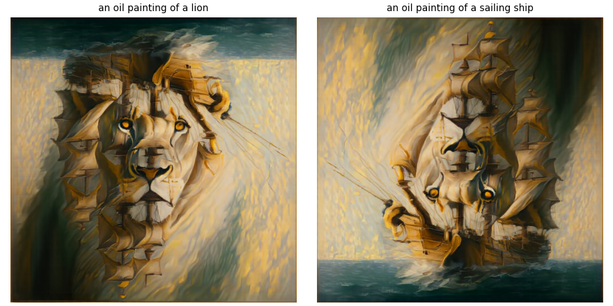
Custom Anagram 2: Castle / Butterfly
Upright: "a watercolor painting of a castle"
Rotated 180°: "a watercolor painting of a butterfly"
In the upright orientation, the central blue forms read as a watercolor castle. Multiple pointed towers and spires create a recognizable castle skyline, while the pale blue and green color palette gives the image a soft watercolor appearance.
When the image is rotated by \(180^\circ\), the same approximately symmetric structure becomes a butterfly. The castle towers are reinterpreted as parts of the butterfly's wings, while the darker central region becomes its body. Thin lines extending from the structure also contribute to the appearance of antennae.
Because both the castle and butterfly have strong bilateral structure, the two concepts fit together especially naturally. Of my custom visual anagrams, this produced the cleanest separation between the two intended interpretations.
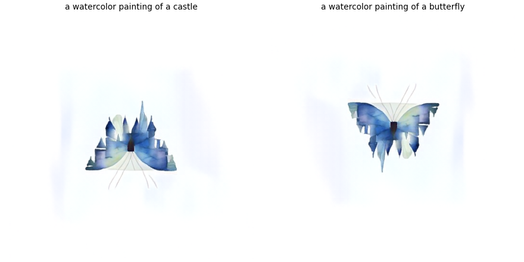
Custom Visual-Anagram Observation
These custom experiments reinforced that prompt selection matters substantially for visual anagrams. Pairs with compatible global structure can share image features more effectively. The castle and butterfly, for example, both benefit from approximate bilateral symmetry, while the lion and sailing ship require the model to reuse more complex local structures in different ways.
The technique therefore does not simply place two images on top of each other. Instead, the averaged velocity field encourages a single generated image whose features remain semantically useful under two orientations.
3.4 Hybrid Images
Finally, I created hybrid images by combining low-frequency information from one velocity field with high-frequency information from another. The hybrid velocity was formed as
The low-pass component determines large-scale structure visible from a distance, while the high-frequency component determines fine details perceived close up. For the low-pass filter, I used Gaussian blur with \(\sigma = 16\) and a kernel size of 265 at \(512\times512\).
After validating make_hybrids using the provided example prompt pairs, I created two additional hybrid images using prompts of my own choice. The first prompt controls the low-frequency structure, which becomes more important when the image is viewed from a distance or reduced in size. The second prompt controls the high-frequency structure, which dominates at full resolution.
For the website, each distant version is displayed at its actual \(64\times64\) size rather than stretched back to \(512\times512\), making the change in perception from suppressing high-frequency detail easier to see.
Starter / Reference Examples
Hybrid 1: Skull / Waterfall
Distant / low-frequency prompt:
"a lithograph of a skull"
Close / high-frequency prompt:
"a lithograph of a waterfall"
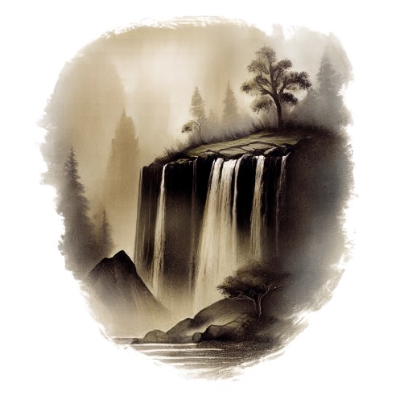
At full resolution, the image reads primarily as a waterfall; when reduced in size or viewed from farther away, the high-frequency waterfall details disappear and the broad dark/light regions form a skull-like silhouette.
Hybrid 2: Cat / Forest
Distant / low-frequency prompt:
"a lithograph of a cat"
Close / high-frequency prompt:
"a lithograph of a forest"
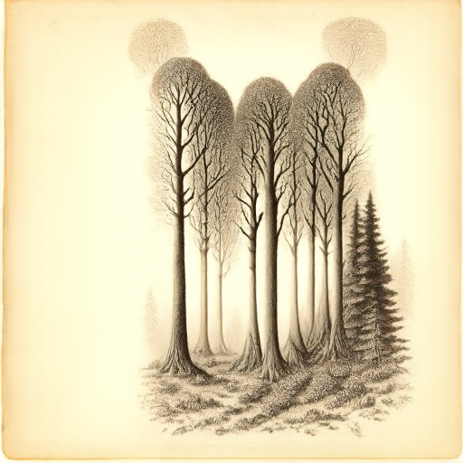
At full resolution, the image reads as a forest of tree-like details; when reduced, the fine details disappear and the large-scale structure forms a cat-like silhouette.
My Custom Hybrid Images
These examples retain the same frequency-based construction while using two new prompt pairs chosen for this project.
Custom Hybrid 1: Owl Face / Dense Tree Branches
Distant / low-frequency prompt:
"a lithograph of an owl face"
Close / high-frequency prompt:
"a lithograph of dense tree branches"
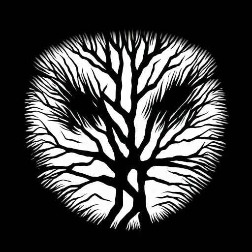
At full resolution, the image is dominated by a dense black-and-white branching pattern. Individual trunks, branches, and fine branching structures are visually prominent, so the close interpretation reads primarily as a network of tree branches.
When the image is reduced to \(64\times64\), much of this high-frequency branching detail disappears. The remaining large-scale arrangement is much more symmetric: the dark regions on the left and right form eye-like areas, while the central trunk produces a strong vertical structure through the middle. Together, these low-frequency shapes suggest the intended owl-like face.
This example shows the frequency-separation idea clearly: the same fine structures that appear as individual branches at full resolution merge into larger facial regions when viewed from farther away.
Custom Hybrid 2: Human Face / Field of Flowers
Distant / low-frequency prompt:
"a lithograph of a human face"
Close / high-frequency prompt:
"a lithograph of a field of flowers"
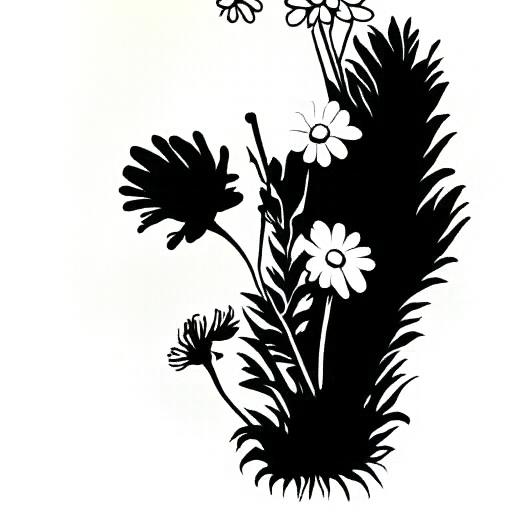
At full resolution, the high-frequency component dominates. The result contains clearly recognizable flowers, petals, stems, and foliage arranged into a black-and-white botanical composition.
When the image is reduced to \(64\times64\), the individual petals and small plant details become much less visible. What remains is the broader distribution of dark and light regions. These large-scale regions form a more compact face-like silhouette rather than reading as individual flowers.
Compared with viewing the image at full resolution, the distant version therefore emphasizes an entirely different level of structure: local botanical details are suppressed while the low-frequency facial composition becomes more prominent.
Custom Hybrid-Image Observation
The custom hybrid experiments also showed that prompt selection is important. The close prompt benefits from subjects with substantial fine detail—such as branches, flowers, or other textured structures—because those details can dominate the high-frequency component.
In contrast, the distant prompt works best when its identity can be represented using broad shapes and tonal regions. Once the image is downsampled, small details disappear, so only these low-frequency structures remain.
The results demonstrate that the two interpretations are not simply blended with transparency. Instead, they occupy different spatial-frequency bands of the same generated image.
Part A Summary
Part A showed several different ways of using the same pretrained flow model. The early experiments demonstrated how a flow model predicts a direction from noisy images toward the clean-data distribution and how repeated Euler updates can be used for reconstruction and generation. Compared with classical Gaussian filtering, the learned model reconstructs semantically meaningful image structure instead of simply suppressing high-frequency content.
Sampling from pure noise also revealed a strong subject bias in the pretrained text-to-image model: the generic prompt "a high quality photo" consistently produced portraits in my experiment. Classifier-free guidance improved the coherence and photographic quality of the outputs, although it reduced diversity and strengthened the underlying bias rather than removing it.
The creative applications then showed that the predicted flow field can be manipulated in several ways. Adjusting the starting time creates a continuum between free generation and source-image preservation; changing the text prompt steers an image toward a desired semantic edit; averaging transformed velocity fields produces orientation-dependent visual anagrams; and separating low- and high-frequency velocity components produces hybrid images whose interpretation changes with viewing distance. After validating the creative methods with the provided example prompts, I also produced two visual anagrams and two hybrid images using my own prompt pairs, highlighting how strongly illusion quality depends on the structural compatibility of the chosen concepts.
Overall, these experiments demonstrate that flow matching is useful not only for generating images from noise, but also as a flexible framework for controlled image manipulation.
Part B: Flow Matching from Scratch
In Part B, I built and trained my own UNet-based generative models on MNIST. I first used the UNet as a single-step denoiser, then tested the limitations of one-step denoising from pure Gaussian noise. I then moved to flow matching, where the model learns a velocity field that continuously transforms noise into valid digits, and finally extended the model with time and class conditioning.
1. Training a Single-Step Denoising UNet
1.1 Implementing the UNet
I first implemented the UNet architecture used throughout Part B. The encoder progressively reduces spatial resolution while increasing feature channels, and the decoder upsamples while concatenating latent activations from the encoder through skip connections. The basic operations were a 3×3 convolution with batch normalization and GELU, downsampling via strided convolution, upsampling via transposed convolution, average pooling to a 1×1 bottleneck, and a symmetric decoder to return the image to its original shape.
- Conv: 3×3 convolution, stride 1, padding 1, followed by BatchNorm2d and GELU. It changes channels while preserving spatial resolution.
- DownConv: 3×3 convolution, stride 2, padding 1, followed by BatchNorm2d and GELU. It halves spatial resolution.
- UpConv: 4×4 transposed convolution, stride 2, padding 1, followed by BatchNorm2d and GELU. It doubles spatial resolution.
- Flatten: 7×7 average pooling that maps a 7×7 feature map to 1×1.
- Unflatten: transposed convolution that maps the 1×1 bottleneck back to 7×7.
- ConvBlock: two Conv operations.
- DownBlock: DownConv followed by ConvBlock.
- UpBlock: UpConv followed by ConvBlock.
With hidden dimension \(D=128\), the implementation contained approximately 7.89 million trainable parameters. This architecture is the implementation requirement for the rest of the report, and no separate generated image is required for the network itself.
1.2 Using the UNet to Train a Denoiser
The first task was to use the UNet as a conventional denoiser. Given a clean image \(x\), I generated a noisy version
The denoiser \(D_\theta\) was trained to map the noisy image back to the corresponding clean image by minimizing mean-squared error:
The MNIST pixel values were normalized to \([0,1]\), so the noise scale can be interpreted relative to that image range. I used \(\sigma\in\{0.0,0.2,0.4,0.5,0.6,0.8,1.0\}\) with the same digit and noise realization to visualize the effect of increasing corruption. At \(\sigma=0\), the digit is unchanged; around \(0.4\)–\(0.5\), the digit remains legible but heavily corrupted; by \(0.8\) and \(1.0\), the noise becomes comparable to or stronger than the digit itself.
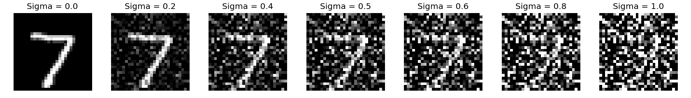
1.2.1 Training
I trained a fresh UNet with hidden dimension \(D=128\), batch size 256, Gaussian noise level \(\sigma=0.5\), Adam learning rate \(10^{-4}\), and 5 training epochs. I trained only on the shuffled MNIST training split and kept the test split separate for evaluation. Critically, I generated fresh Gaussian noise for each training batch instead of fixing a single noisy version of each image, improving the model's robustness.
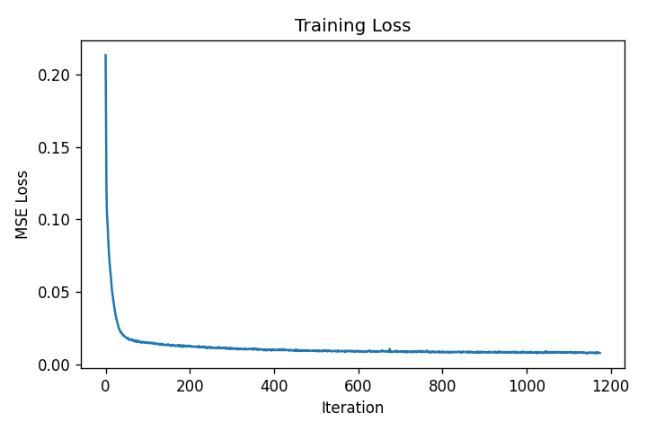
The loss decreases quickly at first and then slowly refines, which is consistent with the straightforward nature of the regression problem. The initial loss was approximately 0.215; the model converged to a much smaller MSE by the end of training.
The four rows show the noisy inputs, outputs after epoch 1, outputs after epoch 5, and the clean targets. The displayed examples are held-out MNIST test-set images corrupted at Sigma = 0.5.
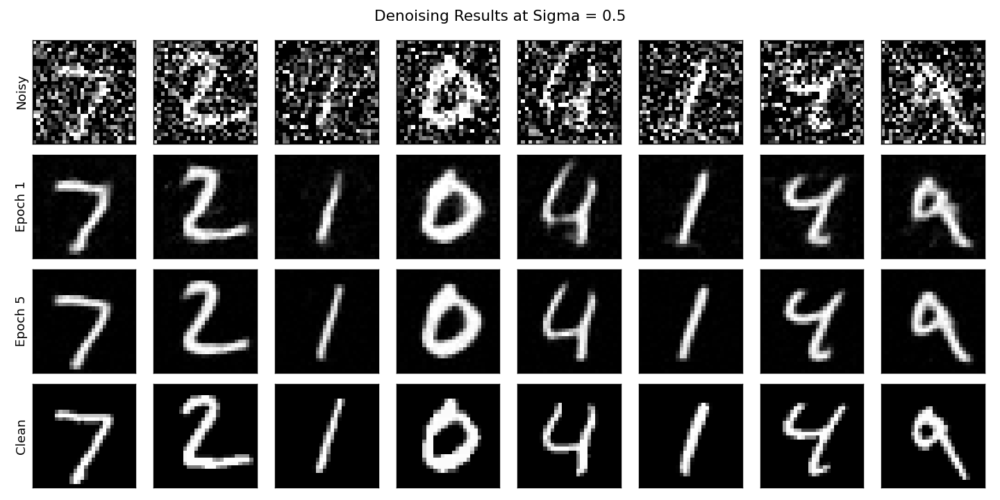
Even after one epoch, the model removes most of the Gaussian noise and recovers recognizable digit shapes. After five epochs, the outputs are cleaner and more faithful, with smoother backgrounds and more stable strokes. The large initial improvement from noisy input to epoch 1 output is stronger than the later improvement from epoch 1 to epoch 5, matching the rapidly flattening training-loss curve.
1.2.2 Out-of-Distribution Testing
The denoiser was trained only with \(\sigma=0.5\), so I next tested generalization to other noise levels. Using the same held-out test digit and the same noise realization, I evaluated \(\sigma = 0.0, 0.2, 0.4, 0.5, 0.6, 0.8, 1.0\). Near the training distribution, the model recovers a clear digit; at \(\sigma=0\), it slightly smooths the already-clean image; at \(\sigma=0.8\) and especially \(1.0\), the output begins to show distortions and additional structures, indicating a distribution shift away from the trained noise regime.
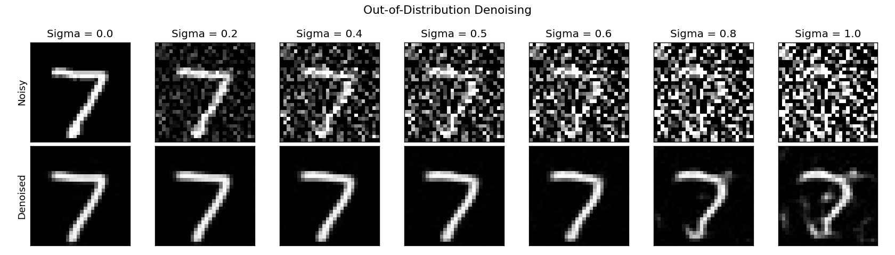
This shows that a denoiser trained for one fixed corruption level learns a specialized mapping rather than a universal denoising function. It generalizes reasonably to nearby noise levels but degrades as the test corruption moves farther away from the training distribution.
1.2.3 Denoising Pure Noise
The next experiment asked whether the same one-step denoising setup could be turned into a generative model. Instead of corrupting a clean image, I trained a fresh \(D=128\) UNet using entirely independent Gaussian inputs \(\epsilon\sim\mathcal N(0,I)\) while the target remained a random clean MNIST digit. This is a strictly more difficult problem because the input contains no information about which class the target should be.
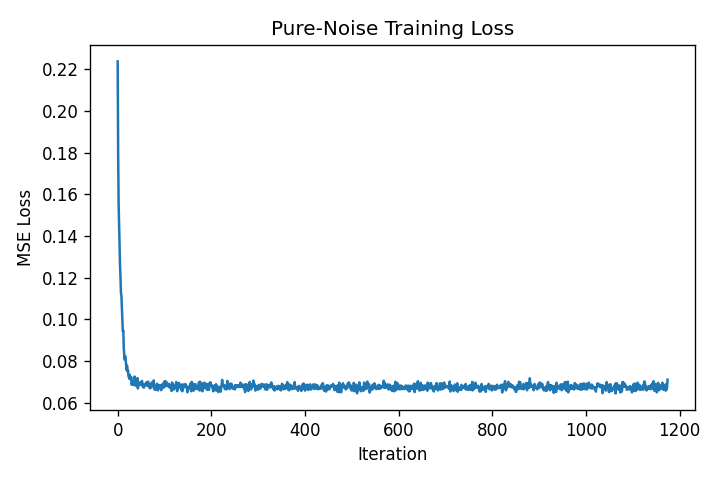
The pure-noise model begins at a relatively high MSE of about 0.22, then drops rapidly toward about 0.07 before plateauing. This plateau happens because the network has no information about which target digit to predict from the independent Gaussian input. Under squared-error loss, the optimal deterministic prediction is the average or centroid of the training distribution rather than a specific valid digit.
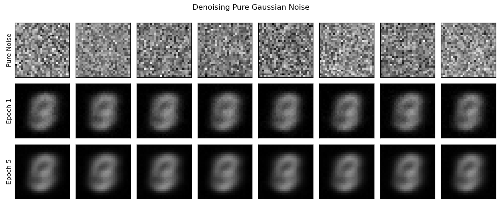
Different Gaussian noise inputs therefore produce nearly the same blurry digit-like template. The resulting template is therefore related to the MNIST training digits collectively rather than to any single training image or digit class: it resembles a pixelwise compromise among many possible targets. This makes it clear that one-step MSE denoising is not enough for unconditional generation: a generative model needs a mechanism that preserves information about the current noise sample and evolves it gradually toward a valid output. That motivates flow matching.
2. Training a Flow Matching Model
Instead of trying to map pure noise directly to a clean image in one step, I trained the UNet to predict a velocity field that moves a sample toward the data distribution along a continuous path. For a clean MNIST image \(x_1\) and Gaussian noise \(x_0\sim\mathcal N(0,I)\), I defined
The network was trained to approximate this velocity field using the flow-matching objective
2.1 Adding Time Conditioning to UNet
The flow depends on both the current image and the current time \(t\), so I extended the UNet with time conditioning. I implemented an FCBlock with a linear layer, GELU, and a second linear layer, and used two separate time embeddings to modulate feature maps in the decoder. The key idea is that the same image structure can require a very different update near \(t=0\) than near \(t=1\). The encoder, decoder, and skip connections remained the same as in the unconditional architecture.
The time embedding therefore modulates decoder features at two different resolutions. This keeps the model aware of where it is along the noise-to-data trajectory.
2.2 Training the Time-Conditioned UNet
I trained a time-conditioned model using hidden dimension \(D=64\), batch size 64, 10 epochs, Adam, initial learning rate \(10^{-2}\), and 50 discrete flow timesteps. I sampled a fresh Gaussian noise image and a random normalized timestep for each training image, constructed \(x_t=(1-t)x_0+t x_1\), and trained the network to predict \(x_1-x_0\). The model was trained on the shuffled MNIST training split, with fresh noise and timesteps generated whenever batches were fetched. I also used an exponential learning-rate scheduler with \(\gamma = 0.1^{1/10}\), and \(\texttt{scheduler.step()}\) was called once after each epoch, reducing the learning rate from 0.01 to approximately 0.001 by the end of training.
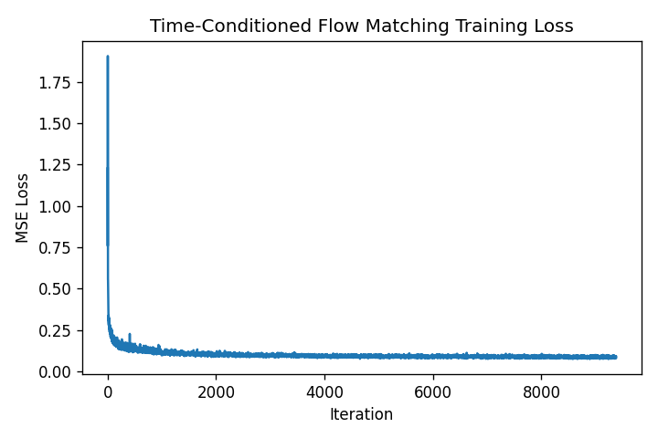
The average loss decreased from 0.153667 after epoch 1 to 0.092857 after epoch 5 and 0.087075 after epoch 10. The curve shows a large initial drop followed by slower refinement, which is exactly what we expect from progressively learning the velocity field.
2.3 Sampling from the Time-Conditioned UNet
To generate samples, I began from \(x_0\sim\mathcal N(0,I)\) and integrated the predicted velocity using Euler updates with \(T=50\) steps:
I sampled 64 images using the same initial noise batch, generated from the same seed, for the epoch 1, 5, and 10 checkpoints so that differences in output quality could be attributed to training rather than different random initializations. After one epoch, the outputs already resemble handwritten digits but are fragmented and ambiguous. By epoch 5, most samples are interpretable as valid digits, and by epoch 10, the samples are more stable and recognizable, though still diverse because the model is only conditioned on time and not class.
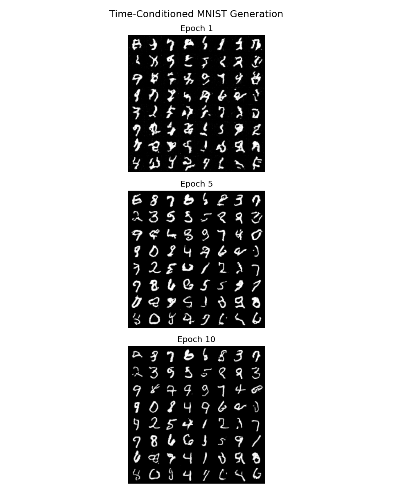
2.4 Adding Class Conditioning to UNet
The time-only model generated recognizable digits but with uncontrolled class. I therefore extended the model with class conditioning. The integer label \(c\in\{0,\ldots,9\}\) was converted to a one-hot vector of length 10, and two FCBlocks transformed this vector into the learned conditioning embeddings that modulated the decoder features alongside the time embeddings. The resulting modulation was
This means the time embedding indicates where along the flow path a sample sits, while the class embedding indicates which digit the flow should move toward. I also dropped the class condition with probability 0.1 during training to support unconditional prediction and classifier-free guidance at sampling time.
2.5 Training the Class-Conditioned UNet
I trained a fresh class-conditioned model using hidden dimension \(D=64\), batch size 64, 10 epochs, 300 discrete timesteps, class dropout probability 0.1, Adam with initial learning rate \(10^{-2}\), and the same exponential scheduler \(\gamma=0.1^{1/10}\). This fresh model was also trained on the shuffled MNIST training split. The flow-matching objective was otherwise unchanged:
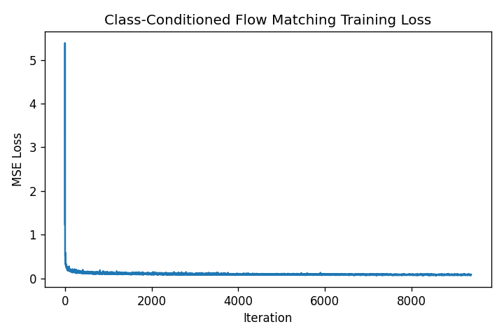
The average losses were Epoch 1 = 0.157855, Epoch 5 = 0.091528, and Epoch 10 = 0.083372. This final training loss is slightly lower than the time-only model's final loss of 0.087075, and the more important practical advantage is explicit class control during generation.
2.6 Sampling from the Class-Conditioned UNet
For class-conditioned generation, I used classifier-free guidance. At each step, the model was evaluated twice: once with the chosen class condition and once with the class removed, giving \(u_c\) and \(u_u\). I then combined them as
I used 300 sampling steps and generated four samples for each digit class 0 through 9 at epochs 1, 5, and 10. At epoch 1, the outputs already show class-specific structure, but many digits are distorted or incomplete. By epoch 5, the digits become much more consistent, and by epoch 10, the model reliably generates clean, recognizable digits for each requested class while still retaining some variation in handwriting style.
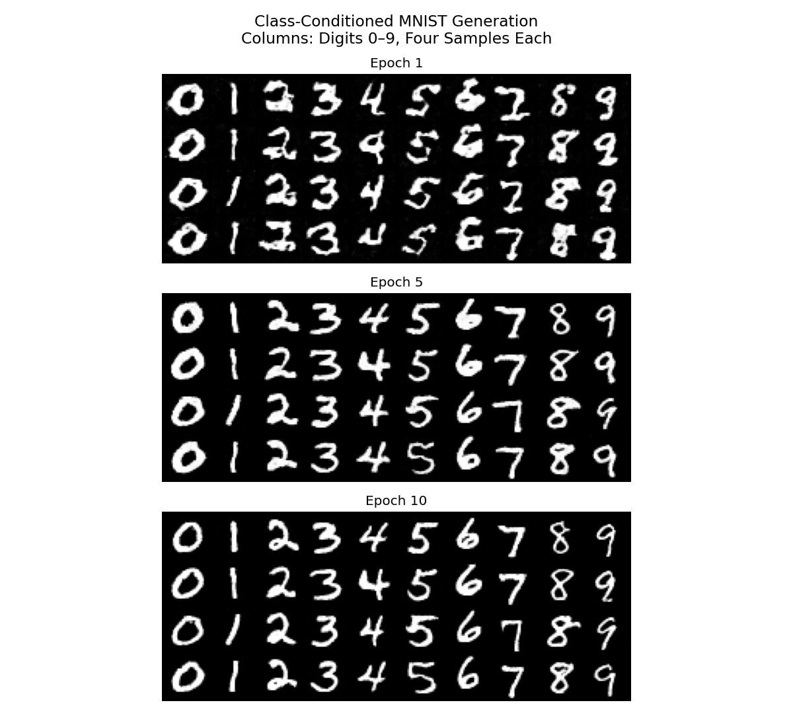
Learning-Rate Scheduler Comparison
The final experiment tested whether similar performance could be achieved without the exponential learning-rate scheduler. The scheduler-based run began at \(10^{-2}\) and decayed toward roughly \(10^{-3}\), while the no-scheduler run used a smaller fixed learning rate of 0.003 to compensate. The final training losses were
The scheduler-based model reached a slightly lower final loss, but the visual generation quality remains very similar. Both models generate clear instances of all ten requested digit classes, with only marginal differences in a few individual strokes. This indicates that the scheduler is useful for fine convergence but not strictly required when a smaller constant learning rate is used.
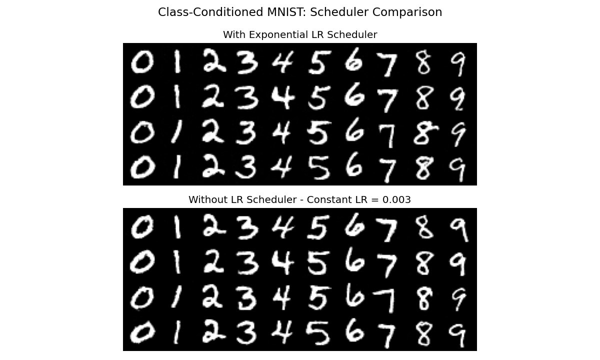
Part B Summary
Part B demonstrated why generative modeling requires more than learning a direct regression from noise to data. The conventional denoising UNet worked well when the noisy input retained information about the underlying MNIST digit. At \(\sigma=0.5\), the model learned to remove strong Gaussian corruption and generalized reasonably well to nearby noise levels, but its performance degraded as the test noise moved farther away from the training distribution.
When the input was changed to completely independent Gaussian noise, the limitations of one-step MSE regression became clear. Because the input contains no information about the desired target class, the model converges toward a blurry average or centroid of the training distribution rather than producing diverse digits. Flow matching solves this by learning a velocity field rather than a one-step mapping: the time-conditioned model progressively moves each random initial noise sample through intermediate states toward the MNIST distribution, allowing different initial noises to evolve into different outputs.
Adding class conditioning makes the generative process substantially more controllable. By providing a one-hot digit label, the model learns a class-specific flow, while 10% conditioning dropout enables classifier-free guidance during sampling. With guidance scale 5, the final model reliably generates several distinct samples for each requested digit class. Finally, the learning-rate scheduler experiment showed that comparable generation quality can be achieved without exponential decay by replacing it with a smaller fixed learning rate of 0.003; the scheduled model reached a slightly lower final training loss, but both models produced visually comparable MNIST samples.
Overall, Part B progresses from single-step reconstruction to iterative generative modeling, showing why flow matching and conditioning provide both diversity and control when generating images from Gaussian noise.